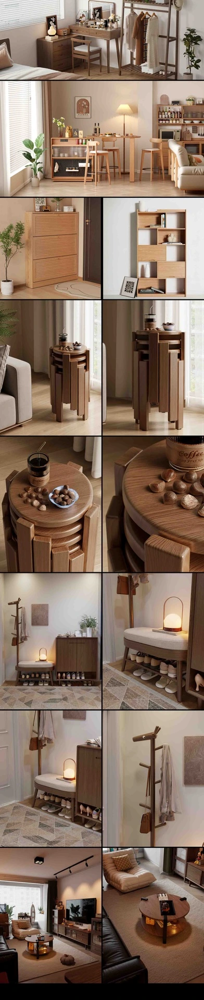

Product rendering
Furniture Product Rendering
Furniture visualizations focused on materials, lighting and atmosphere for e-commerce and product promotion.
Project typeProduct rendering
My contributionMaterials / Lighting & rendering
Tools3ds Max / V-Ray / Chaos Vantage

Project context
At Shenzhen Yaqi Furniture Co., Ltd., I produced furniture visualizations across multiple batches in response to product operations needs.
What I did
- Developed furniture materials and lighting, refining composition and atmosphere.
- Revised images based on operations feedback for e-commerce and promotional delivery.
- Organized material and lighting workflows and standardized render outputs.
Work & process
1 / Open original image

Contribution & credits
Commercial project. My responsibilities were product rendering and visual presentation.